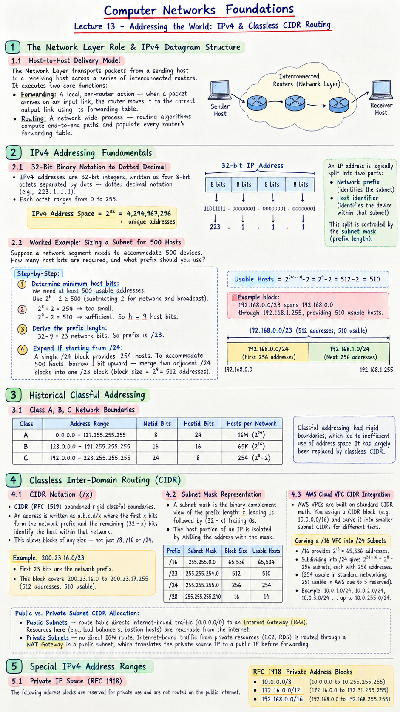

Short Notes & Visual Summary
Handwritten / quick summary notes for Lecture 13:

Click image to open high-resolution version in new tab
The Network Layer Role & IPv4 Datagram Structure
1.1 Host-to-Host Delivery Model
The Network Layer transports packets from a sending host to a receiving host across a series of interconnected routers. It executes two core functions:
- Forwarding: A local, per-router action — when a packet arrives on an input link, the router moves it to the correct output link using its forwarding table.
- Routing: A network-wide process — routing algorithms compute the end-to-end paths and populate every router's forwarding table.
IPv4 Addressing Fundamentals
2.1 32-Bit Binary Notation to Dotted Decimal
IPv4 addresses are 32-bit integers, written as four 8-bit octets separated by dots — dotted decimal notation (e.g., 223.1.1.1). Each octet ranges from 0 to 255.
An IP address is logically split into two parts: the network prefix (identifies the subnet) and the host identifier (identifies the individual device within that subnet). This split is controlled by the subnet mask (prefix length).
2.2 Worked Example: Sizing a Subnet for 500 Hosts
Suppose a network segment needs to accommodate 500 devices. How many host bits are required, and what prefix should you use?
- Determine minimum host bits: We need at least 500 usable addresses. Use the formula $2^h - 2 \geq 500$ (subtracting 2 for network and broadcast addresses).
- $2^8 - 2 = 254$ — too small.
- $2^9 - 2 = 510$ — sufficient. So we need $h = 9$ host bits.
- Derive the prefix length: A 32-bit IPv4 address with 9 host bits leaves $32 - 9 = 23$ network bits. The subnet prefix is
/23. - Expand if starting from /24: A single
/24block provides only $2^8 - 2 = 254$ hosts. To accommodate 500 hosts you must borrow 1 bit upward — merge two adjacent/24blocks into one/23block (block size = $2^9 = 512$ addresses, 510 usable).
Example block: 192.168.0.0/23 spans 192.168.0.0 through 192.168.1.255, providing 510 usable host addresses.
Historical Classful Addressing
3.1 Class A, B, C Network Boundaries
- Class A (0.0.0.0 to 127.255.255.255): 8-bit netid, 24-bit hostid ($16M$ hosts/net).
- Class B (128.0.0.0 to 191.255.255.255): 16-bit netid, 16-bit hostid ($65K$ hosts/net).
- Class C (192.0.0.0 to 223.255.255.255): 24-bit netid, 8-bit hostid ($254$ hosts/net).
Classless Inter-Domain Routing (CIDR)
4.1 CIDR Notation (/x)
CIDR (RFC 1519) abandoned rigid classful boundaries. An address is written as a.b.c.d/x where the first $x$ bits form the network prefix and the remaining $32 - x$ bits identify the host within that network. This allows blocks of any size — not just /8, /16, or /24.
Example: 200.23.16.0/23 — the first 23 bits are the network prefix; this block covers addresses 200.23.16.0 to 200.23.17.255 (512 addresses, 510 usable).
4.2 Subnet Mask Representation
A subnet mask is the binary complement view of the prefix length: $x$ leading 1s followed by $32-x$ trailing 0s. The host portion of an IP is isolated by ANDing the address with the mask.
| Prefix | Subnet Mask | Block Size | Usable Hosts |
|---|---|---|---|
| /16 | 255.255.0.0 | 65,536 | 65,534 |
| /23 | 255.255.254.0 | 512 | 510 |
| /24 | 255.255.255.0 | 256 | 254 |
| /28 | 255.255.255.240 | 16 | 14 |
4.3 AWS Cloud VPC CIDR Integration
AWS Virtual Private Clouds (VPCs) are built entirely on standard CIDR math. When you create a VPC, you assign it a CIDR block (e.g., 10.0.0.0/16), which is then carved into smaller subnet CIDRs for different tiers of resources.
- A
/16VPC block (e.g.,10.0.0.0/16) provides $2^{16} = 65{,}536$ total addresses. - Subdividing into
/24subnets gives $2^{24-16} = 2^8 = 256$ subnets, each with 256 addresses (254 usable in standard networking; 251 usable in AWS due to 5 reserved addresses). - Example allocation:
10.0.1.0/24,10.0.2.0/24,10.0.3.0/24… up to10.0.255.0/24.
Public vs. Private Subnet CIDR Allocation:
- Public Subnets — assigned a CIDR block whose route table directs internet-bound traffic (
0.0.0.0/0) to an Internet Gateway (IGW). Resources here (e.g., load balancers, bastion hosts) are reachable from the internet. - Private Subnets — have no direct IGW route. Internet-bound traffic from private resources (EC2, RDS) is routed through a NAT Gateway sitting in a public subnet, which translates the private source IP to a public IP before forwarding — applying the same NAPT principle covered in Lecture 14.
Special IPv4 Address Ranges
5.1 Private IP Space (RFC 1918)
10.0.0.0/8(10.0.0.0 to 10.255.255.255)172.16.0.0/12(172.16.0.0 to 172.31.255.255)192.168.0.0/16(192.168.0.0 to 192.168.255.255)
Original PDF Notes
Below is the original PDF document for reference: